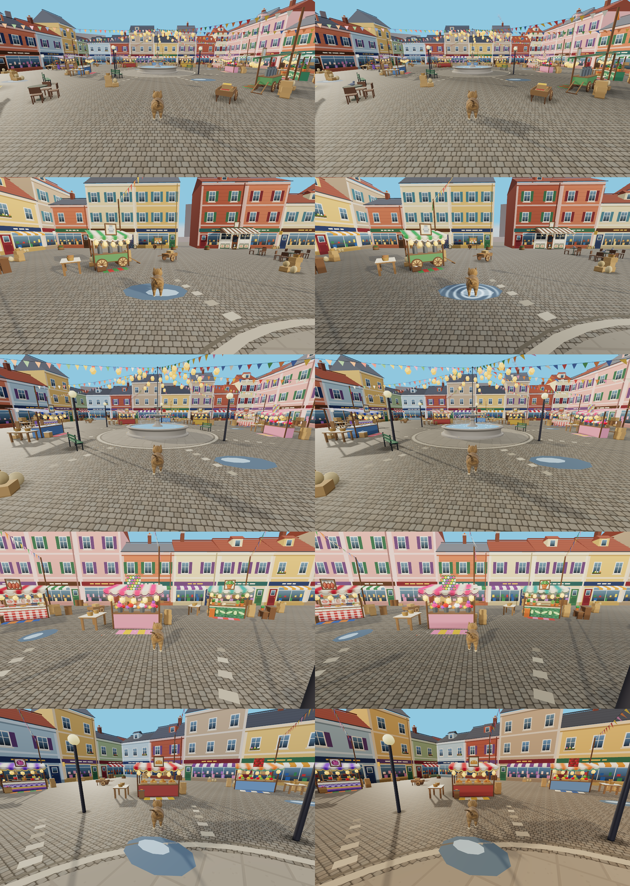

Left: before. Right: after. Rows: the spawn (a cloud's shadow drifting over the cobbles); mid-reaction, she splashes through a puddle (rings spread from her paws); the fountain (glints on the water, her wishing-coins brighter as she nears); the flower stall (awnings sway harder as she passes); a warm evening part of the day (morning is cooler, midday bright). Not visible in a still: the cloud drifts, gusts lift the awnings and bunting, the stalls' lanterns chime as she brushes by, sparrows sing in the morning and the evening murmur is louder. Reduced motion holds all of it still; the lite rung keeps only the day's tone.
